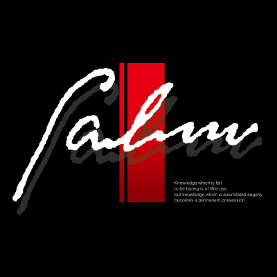

The Legend of Heroes: Trails from Zero
Genres: Japanese role-playing game
Website
Developer: Falcom
Publisher: NIS America
Platforms: PSP, PlayStation Vita, PC, PlayStation 4, Nintendo Switch, Nintendo Switch 2, PlayStation 5
Released: 2022, September 27
Rated: T for Teen
The Crossbell State, located in western Zemlya-- Once the site of fierce territorial battles, it has since developed into one of the continent's leading trade and financial centers. However, pressure from the Erebonian Empire and the Calvard Republic is steadily increasing. While corrupt officials from both sides remain locked in political disputes, the mafia and underground criminal organizations are preparing to start a war. In the midst of all this chaos, the Crossbell Police Department has lost the trust of its people. Among them are Lloyd Bannings, a rookie agent, Elie MacDowell, granddaughter of Crossbell's mayor, Tio Plato, a young sorcereress who wields an orbal staff, and Randy Orlando, a former security guard. The foursome are assigned to a new department, the Special Support Section, where they are left with no choice but to join forces in the face of adversity. This is a story about four unlikely heroes fighting to overcome the walls defining their way of life.